Замки Бургундии
Классическая стратегия о планировании, торговле и строительстве. 1–4 игрока. Метка «стр. N» открывает страницу оригинального буклета.
Шпаргалка
Структура партии
- 5 фаз (A–E), в каждой 5 раундов → 25 раундов, 50 действий.
- Раунд: все бросают кубики, первый игрок кладёт товар на склад по белому кубику, затем все ходят в порядке фишек на мосту.
- Конец фазы: за каждый
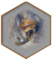
рудник.
Ход: 2 кубика = 2 действия
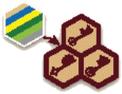
Взять тайл со склада с номером кубика → в ячейку с ключом.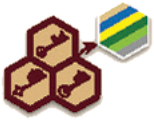
Выложить тайл на клетку того же цвета с номером кубика, рядом с уже выложенным.- Продать товары цвета кубика: + 2/3/4 очка за тайл.
- Взять 2 рабочих (кубик любой). Рабочий : ±1 к кубику (6↔1).
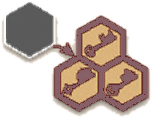
1 раз за ход: купить тайл с чёрного склада за .
Эффекты тайлов
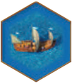
Корабль: забрать товары с любого склада + шаг по мосту.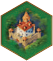
Замок: дополнительное действие с любым значением.- Рудник: в конце каждой фазы.
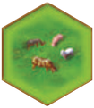
Животные: очки за всех животных этого вида на пастбище.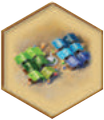
Здание: разовый эффект; одно здание каждого вида в городе.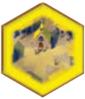
Монастырь: особое свойство (список).
Очки
- Заполнил область: 1–36 очков за размер + 10/8/6/4/2 за фазу.
- Первым заполнил все клетки цвета: 5/6/7, вторым: 2/3/4.
- Конец игры: +1 за товар, +1 за каждую , +1 за каждые 2 , очки монастырей.
- Ничья: меньше пустых клеток → дальше от центра на мосту.
Об игре стр. 1
Бургундия, XV век. Вы — влиятельный герцог, который стремится привести свои владения к процветанию путём продуманного расширения и торговли.
Бросайте кубики, чтобы узнать, какие возможности у вас есть, и выбрать победную стратегию. Торговля или скотоводство, строительство или исследования — успеха и власти можно добиться самыми разными способами. Благодаря разнообразию герцогств игра сохраняет новизну даже для опытных игроков.
В игре побеждает тот, кто наберёт больше победных очков к концу партии.
Состав игры стр. 1
Базовая игра
- 164 шестиугольных тайла:
- 7 × 8 зданий (40 бежевых, 16 чёрных)
- 7 × 4 животных (20 светло-зелёных, 8 чёрных)
- 26 монастырей (20 жёлтых, 6 чёрных)
- 16 замков (14 тёмно-зелёных, 2 чёрных)
- 12 рудников (10 серых, 2 чёрных)
- 26 кораблей (20 синих, 6 чёрных)
- 42 тайла товаров (квадратные, по 7 каждого цвета)
- 24 серебряные монеты
- 26 жетонов рабочих
- 12 тайлов бонусов (по 1 маленькому и 1 большому в 6 цветах)
- 4 жетона победных очков (100/200)
- 8 фишек (по 2 в четырёх цветах игроков)
- 9 кубиков (по 2 в цветах игроков и 1 белый)
- 1 игровое поле (двустороннее)
- 16 планшетов игроков (по 4 с герцогствами № 1 и № 2 и по 1 с герцогствами №№ 3–10)
- 4 памятки
Дополнения
- 4 шестиугольных тайла
- 6 планшетов (№№ 11a–11f): «Заставы»
- 9 шестиугольных тайлов: «Белые замки» (включая тайл монастыря № 29)
- 5 шестиугольных тайлов: «Таверны»
- 12 карт: «Торговые пути»
- 2 × 4 планшетов (№ 12a1 и № 12a2; № 12b1 и № 12b2): «Игра в команде»
- 2 планшета (№ 13a и № 13b): «Одиночная игра»
- 18 тайлов: «Щиты»
Подготовка стр. 2–3
Игровое поле и общий резерв
Положите игровое поле на середину стола. На стороне для 4 игроков указаны:
- таблица победных очков;
- 5 делений фаз (A–E);
- 5 делений раундов;
- 6 складов №№ 1–6, каждый с 4 цветными ячейками для шестиугольных тайлов и 1 ячейкой для тайла товара;
- 1 чёрный склад в центре;
- 1 мост (трек порядка хода);
- 6 ячеек под тайлы бонусов;
- 1 трек победных очков (0–100).
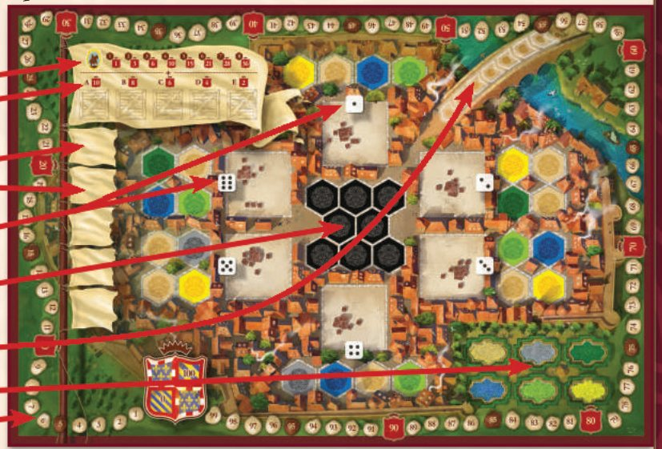
На обратной стороне — поле для 2 и 3 игроков. Оно отличается только числом ячеек на складах (в том числе на чёрном). Подробнее — в разделе «Вдвоём или втроём».
- Положите рядом с полем 24 серебряные монеты, 26 жетонов рабочих и белый кубик.
- Разделите 164 шестиугольных тайла по цвету рубашки и положите стопками рядом с полем лицевой стороной вниз.
- Перемешайте 42 тайла товаров лицом вниз. Соберите из них 5 стопок по 5 тайлов и положите по одной на каждое деление фаз (A–E). Оставшиеся 17 тайлов отложите стопкой лицом вниз.
- Разложите 12 тайлов бонусов в ячейки на поле (большие поверх маленьких).
Что берёт каждый игрок
- Планшет № 1 либо № 2 (у всех игроков должны быть одинаковые планшеты; о герцогствах №№ 3–10 — см. «Если вы хорошо знакомы с игрой»).
- 1 замок (тёмно-зелёный тайл) — в центральную тёмно-зелёную клетку с номером 6.
- 3 случайных тайла товаров из 17 оставшихся — лицом вверх в ячейки в правом нижнем углу планшета. Одинаковые кладите стопкой. Лишние товары верните в коробку.
- 1 памятку — под планшет. На ней эффекты особых тайлов и очки за заполнение областей.
- 2 кубика выбранного цвета.
- 2 фишки — одну на стартовое деление трека очков (0/100).
- 1 серебряную монету — в ячейку в правом верхнем углу планшета.
- 1 жетон победных очков (100/200) — рядом с планшетом.
Первый игрок, рабочие и мост стр. 3
Определите первого игрока броском кубика (кто выбросил больше). Он берёт 1 рабочего, следующий по часовой стрелке — 2, третий — 3, четвёртый — 4.
Первый игрок ставит вторую фишку на первое деление моста (трека порядка хода). Остальные по очереди подкладывают свои фишки на то же деление под фишки предыдущих игроков (фишка последнего — в самом низу).
Первый игрок берёт белый кубик.
Планшет герцогства
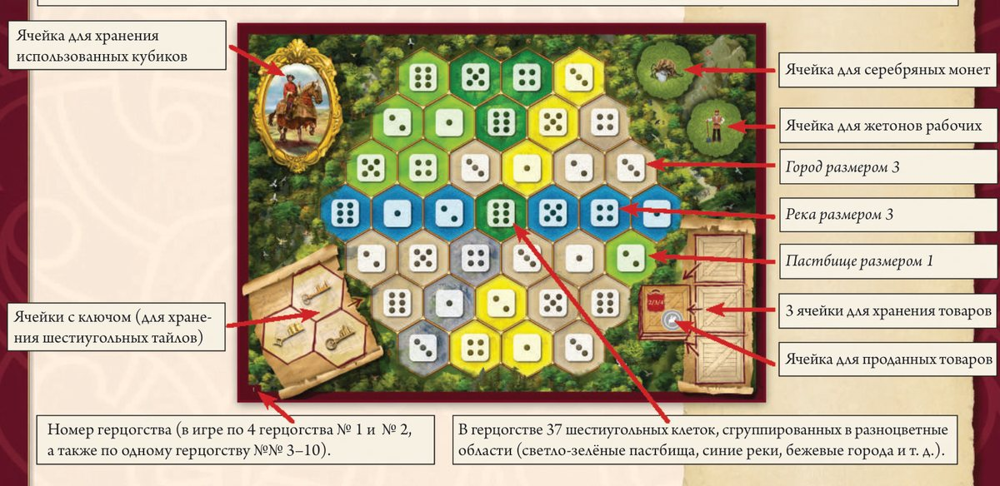
В герцогстве 37 шестиугольных клеток, сгруппированных в разноцветные области (светло-зелёные пастбища, синие реки, бежевые города и т. д.).
- Слева вверху — портрет: сюда кладут использованные кубики.
- Слева внизу — 3 ячейки с ключом для хранения шестиугольных тайлов.
- Справа вверху — ячейки для серебряных монет и жетонов рабочих.
- Справа внизу — 3 ячейки для хранения товаров и ячейка для проданных товаров.
- Номер герцогства: в игре по 4 герцогства № 1 и № 2 и по одному №№ 3–10.
Игровой процесс стр. 3–4
Игра состоит из 5 фаз, от A до E. Каждая фаза делится на 5 раундов.
Перед каждой фазой
- Уберите в коробку шестиугольные тайлы, оставшиеся на поле (в начале фазы A этот шаг пропускается).
Важно! Не убирайте тайлы товаров со складов!
- Одну за другой заполните шестиугольные ячейки шести пронумерованных складов случайными тайлами соответствующих цветов. Переверните их лицом вверх.
- Заполните ячейки центрального чёрного склада (8 при игре вчетвером) случайными тайлами с чёрными рубашками.
- Возьмите с деления текущей фазы стопку из 5 товаров и положите их лицом вверх на пять делений раундов.
Пять игровых раундов стр. 4
Каждый раунд проходит по одной схеме:
- Все игроки одновременно бросают свои два кубика, первый игрок — ещё и белый. Все видят значения и могут планировать ходы заранее.
- Первый игрок перекладывает тайл товара с деления текущего раунда на склад с номером белого кубика. Больше белый кубик в этом раунде не участвует: его нельзя использовать для действия и нельзя менять рабочими.
- Первый игрок делает ход, затем остальные в порядке хода по мосту: раньше ходит тот, чья фишка ближе к центру города; на одном делении — тот, чья фишка выше.
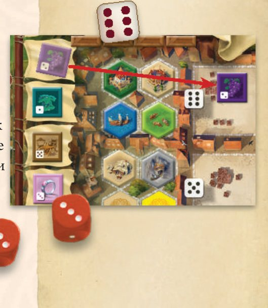
Поскольку каждый раунд один товар уходит на склад, по оставшимся товарам всегда видно, какой сейчас раунд и сколько осталось.
Ход игрока и жетоны рабочих
В свой ход игрок выполняет два действия, по одному на каждый кубик. Использованные кубики кладите на портрет герцога.
Жетоны рабочих позволяют в любой момент хода изменить значение кубика: верните жетон в резерв и измените значение на 1 в любую сторону. Из единицы можно сделать шестёрку и наоборот. Рабочих можно тратить сколько угодно.
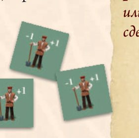
Игровые действия стр. 4–8
Каждый кубик даёт одно действие. Два действия можно выполнять в любом порядке и сочетании (в том числе одно и то же дважды).
1. Взять шестиугольный тайл с поля
Значение кубика указывает, с какого склада можно взять один любой шестиугольный тайл. Положите его в пустую ячейку с ключом в левом нижнем углу планшета (а не прямо в герцогство).
Если все три ячейки заняты, сначала освободите одну, убрав её тайл в коробку. Лучше избегать таких ситуаций.
2. Выложить тайл в своё герцогство стр. 5
Возьмите тайл из ячейки с ключом и выложите его на пустую клетку, у которой:
- цвет совпадает с цветом тайла;
- номер совпадает со значением кубика;
- есть соседство с ранее выложенным тайлом.
Выполняя это действие впервые за партию, выложите тайл на одну из шести клеток вокруг стартового замка.
Сразу после выкладывания срабатывает эффект тайла:
Монастырь (жёлтый)
В игре 26 разных монастырей. Их эффекты — в разделе «Тайлы монастырей».
Корабль (синий)
Сразу происходят два события:
- Выберите любой склад, заберите все тайлы товаров оттуда и разместите в своих ячейках для товаров.
Важно! Склад не обязан совпадать со значением кубика, которым вы выложили корабль.
- Переместите свою фишку на мосту на следующее деление ближе к центру. Если деление занято, поставьте фишку сверху. Если вы стали первым игроком следующего раунда, возьмите белый кубик.
На планшете можно хранить до трёх разных видов (цветов) товаров, одинаковые кладутся стопкой. Если для товара нет места, он остаётся на складе.
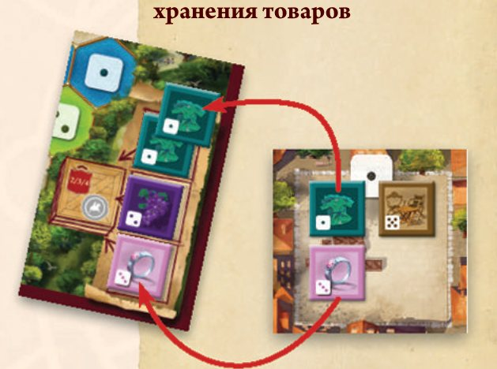
Замок (тёмно-зелёный)
Немедленно выполните одно дополнительное действие, как будто у вас есть ещё один кубик с любым значением на ваш выбор. Например, выложить ещё один тайл или взять 2 жетона рабочих.
Рудник (серый)
Сразу ничего не даёт. В конце каждой фазы вы получаете 1 серебряную монету за каждый рудник в герцогстве.
Животные (светло-зелёный) стр. 6
Сразу получаете очки: столько, сколько животных на тайле (2–4).
Если на том же пастбище (непрерывной области светло-зелёных клеток) уже есть тайлы с животными того же вида, вы получаете очки и за них тоже.
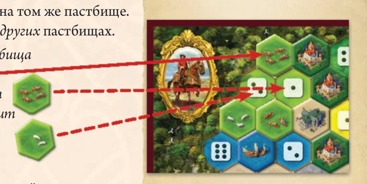
Здания (бежевые)
Выложив здание, вы можете немедленно — и только один раз! — применить его эффект (он указан символами на памятке).
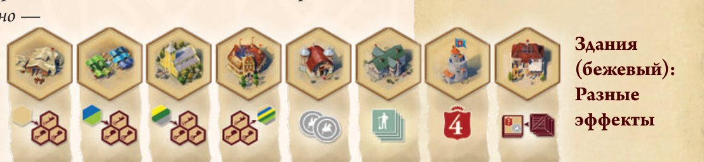
В герцогстве от 2 до 6 городов размером 1–8 клеток. Например, в герцогстве № 1 четыре города: размером 1, размером 5 и два размером 3.
Эффекты зданий стр. 6–7
Рынок
Возьмите один тайл корабля (синий) или животных (светло-зелёный) с любого из шести складов (но не с чёрного!) в пустую ячейку с ключом.
Столярная мастерская
Возьмите один тайл здания (бежевый) с любого из шести складов (не с чёрного!) в пустую ячейку с ключом.
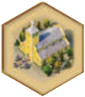
Церковь
Возьмите один тайл рудника (серый), монастыря (жёлтый) или замка (тёмно-зелёный) с любого из шести складов (не с чёрного!) в пустую ячейку с ключом.
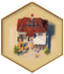
Хранилище
Немедленно (без кубика!) продайте всю стопку товаров одного вида на выбор, как при действии «Продать товары».
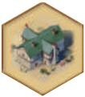
Гостиница
Возьмите 4 жетона рабочих.
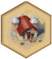
Банк
Возьмите 2 серебряные монеты.
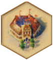
Ратуша
Выложите ещё один шестиугольный тайл любого цвета из ячейки с ключом (его эффект тоже срабатывает).
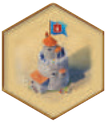
Сторожевая башня
Получите 4 победных очка.
Общие правила зданий и выкладывания стр. 7
- Чтобы получить эффект здания, достаточно его выложить. Кубик или действие на это не тратятся.
- Если эффект нельзя применить сразу (например, выложили рынок, а на складах нет синих и светло-зелёных тайлов), здание всё равно можно выложить, но воспользоваться эффектом позже нельзя.
- Число рабочих и монет не ограничено. Если закончились — замените чем-нибудь.
- Взятый с поля тайл всегда кладётся в ячейку с ключом, даже если следующим действием вы его выложите.
- Выложенные в герцогство тайлы нельзя убрать или заменить.
Заполнение областей и бонусы стр. 8
Когда игрок выкладывает тайл в последнюю пустую клетку цветной области, область заполнена и приносит очки по двум параметрам:
- За размер (1–8 клеток): от 1 до 36 очков.
- За текущую фазу (для области любого размера): от 10 очков в фазе A до 2 в фазе E. Эти числа указаны на поле над делениями фаз.
| Размер области | 1 | 2 | 3 | 4 | 5 | 6 | 7 | 8 |
|---|---|---|---|---|---|---|---|---|
| Очки | 1 | 3 | 6 | 10 | 15 | 21 | 28 | 36 |
| Фаза | A | B | C | D | E |
|---|---|---|---|---|---|
| Очки | 10 | 8 | 6 | 4 | 2 |
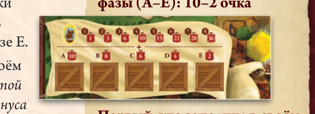
Бонус за цвет
Кто первым заполнил все клетки одного цвета в герцогстве (например, выложил третий рудник или шестой монастырь), берёт большой тайл бонуса этого цвета: 5 очков вдвоём, 6 втроём, 7 вчетвером.
Второй берёт маленький тайл: 2/3/4 очка. Третий и четвёртый бонусов не получают.
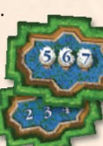
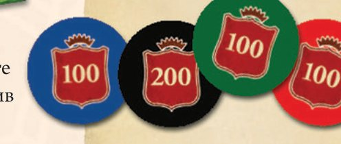
Когда фишка проходит стартовое деление трека (0/100), положите жетон очков стороной 100 вверх. При втором проходе переверните его на 200.
3. Продать товары стр. 8
Значение кубика указывает вид (цвет) товара. Переложите всю стопку этих товаров лицом вниз в ячейку проданных товаров и получите:
- 1 серебряную монету (независимо от числа тайлов);
- 2 / 3 / 4 очка за каждый проданный тайл (в игре на 2 / 3 / 4 игроков).
4. Взять жетоны рабочих
Кубик с любым значением позволяет взять из резерва 2 жетона рабочих.
Чёрный склад: покупка тайла
В свой ход, в дополнение к двум действиям, вы можете один раз приобрести любой тайл с чёрного склада в центре поля. Это можно сделать в любой момент хода: до, между, после действий и даже во время действия.
Заплатите в резерв 2 серебряные монеты и положите тайл в пустую ячейку с ключом.
Конец фазы и игры стр. 9
Конец фазы
Фаза заканчивается после пятого раунда. Каждый игрок получает 1 серебряную монету за каждый рудник. Также срабатывают эффекты некоторых монастырей. Затем начинается следующая фаза (см. «Перед каждой фазой»).
Конец игры и финальный подсчёт
Игра завершается после фазы E (25 раундов, 50 действий). Каждый игрок добавляет:
- 1 очко за каждый непроданный тайл товара;
- 1 очко за каждую серебряную монету;
- 1 очко за каждые два жетона рабочих;
- очки за некоторые монастыри в герцогстве (см. ниже).
Побеждает набравший больше очков. При равенстве — тот, у кого меньше пустых клеток в герцогстве. Если снова равенство — тот, чья фишка на мосту дальше от центра.
Тайлы монастырей стр. 9–11
В игре 26 разных жёлтых тайлов. Одни дают постоянные эффекты сразу после выкладывания, другие важны только при финальном подсчёте.
№ 1 — Одинаковые здания в городе
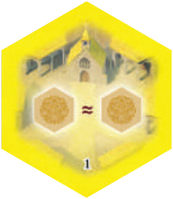
На вас не действует ограничение «одно здание каждого вида в городе». Можно выкладывать в город такие же здания, какие там уже есть.
№ 2 — Рабочие за рудники
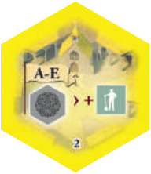
В конце каждой фазы получаете 1 жетон рабочего за каждый рудник (в дополнение к монете).
№ 3 — 2 монеты за продажу
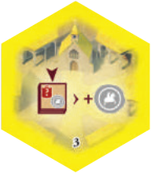
При продаже товаров (действием или хранилищем) получаете 2 серебряные монеты вместо одной.
№ 4 — Рабочий за продажу
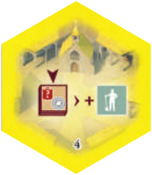
При продаже товаров (действием или хранилищем) получаете ещё 1 жетон рабочего в дополнение к монете.
№ 5 — Корабль берёт с двух складов
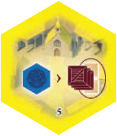
Выкладывая корабль, забираете товары не только с выбранного склада, но и с одного соседнего.
№ 6 — Покупка тайла за рабочих
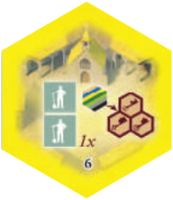
Можете потратить 2 жетона рабочих вместо 2 монет, чтобы купить шестиугольный тайл, и выбрать его с любого склада, а не только с чёрного. Как и раньше — только один тайл за ход.
№ 7 — Бонус за животных стр. 10
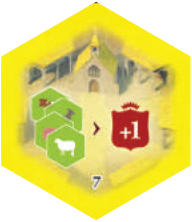
Выкладывая тайл животных, дополнительно получаете 1 очко за каждый тайл животных, который принёс очки.
№ 8 — Рабочий меняет кубик на ±2
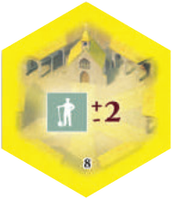
Каждый жетон рабочего изменяет значение кубика на 2, а не на 1.
№ 9 — ±1 для зданий
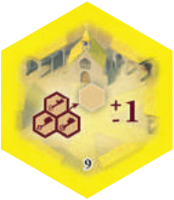
Выкладывая здание (бежевый), можете бесплатно изменить значение кубика на 1.
№ 10 — ±1 для животных и кораблей
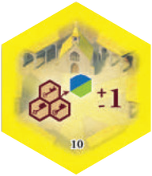
Выкладывая животных или корабль (светло-зелёный или синий), можете бесплатно изменить значение кубика на 1.
№ 11 — ±1 для рудников, замков, монастырей
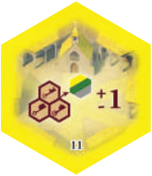
Выкладывая рудник, замок или монастырь (серый, тёмно-зелёный или жёлтый), можете бесплатно изменить значение кубика на 1.
№ 12 — ±1 при взятии тайла
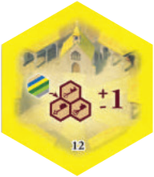
Беря шестиугольный тайл с поля, можете бесплатно изменить значение кубика на 1.
№ 13 — Монета к рабочим
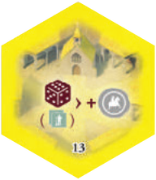
Выполняя действие «Взять жетоны рабочих», дополнительно получаете 1 серебряную монету.
№ 14 — 4 рабочих вместо 2
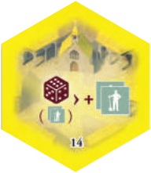
Действие «Взять жетоны рабочих» даёт 4 жетона вместо двух.
№ 15 — 2 очка за вид проданных товаров
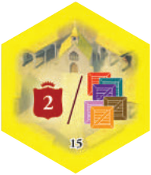
В конце игры 2 очка за каждый вид товаров, которые вы продали. Непроданные не считаются. Свою стопку проданных товаров можно смотреть в любой момент.
№ 16–23 и 29 — 4 очка за здание
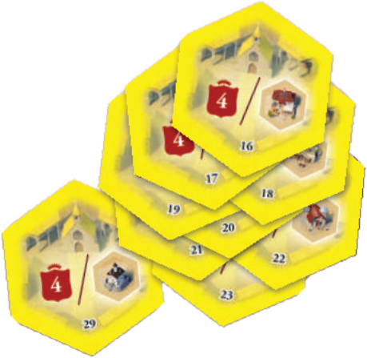
В конце игры 4 очка за каждое здание указанного на тайле вида в вашем герцогстве.
№ 24 — 4 очка за вид животных стр. 11
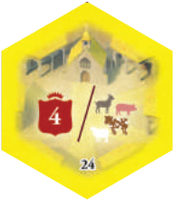
В конце игры 4 очка за каждый вид животных в вашем герцогстве.
№ 25 — 1 очко за проданный товар
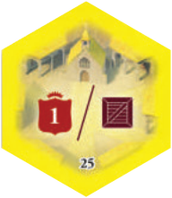
В конце игры 1 очко за каждый проданный тайл товара. Непроданные не считаются.
№ 26 — 3 очка за бонус
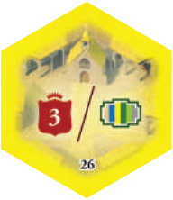
В конце игры 3 очка за каждый ваш тайл бонуса (большой или маленький — неважно).
Если вы играете вдвоём или втроём стр. 11
Переверните игровое поле.
- Вдвоём: используйте только 12 внутренних шестиугольных ячеек складов и только 4 ячейки чёрного склада.
- Втроём: используйте также 8 ячеек с отметкой «3».
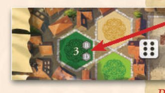
Не забудьте: продажа товара приносит 2 очка за тайл вдвоём и 3 втроём, бонус за цвет — 5/2 вдвоём и 6/3 втроём.
Дополнения стр. 11–16
4 шестиугольных тайла
Замешайте их в соответствующие стопки (чёрную и жёлтую).
Мост (монастырь, жёлтый № 27)
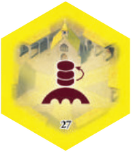
Если ваша фишка на мосту стоит на одном делении с другими, она всегда остаётся сверху. Если другой игрок ставит фишку на вашу, ваша немедленно возвращается наверх.
Рабочие (монастырь, жёлтый № 28)
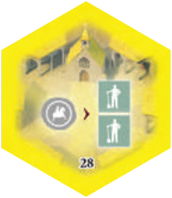
Можете покупать жетоны рабочих: 2 рабочих за 1 серебряную монету.
Подъёмный кран (здание, чёрный)
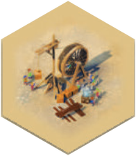
Выложив кран, немедленно разыграйте эффект любого здания, даже если такого нет в герцогстве (продать товары, взять 2 монеты, взять замок и т. п.).
В конце игры при подсчёте монастырей №№ 16–23 и 29 кран считается одним любым зданием на ваш выбор (не обязательно тем, чей эффект вы разыграли).
Гуси (животные, чёрный)
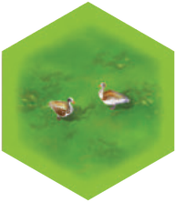
Выложив тайл с двумя гусями, получите 2 очка, а также очки за один любой другой вид животных на том же пастбище. Выкладывая на пастбище с гусями другой тайл животных, дополнительно получаете 2 очка за гусей. Гуси — отдельный вид для монастыря № 24.
Новые герцогства (№№ 11a–11f): «Заставы» стр. 12
Раздайте каждому игроку по одному герцогству № 11.
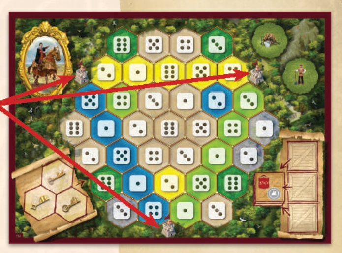
- Соединив две заставы «дорожкой» из тайлов, игрок получает очки по текущей фазе (10, 8, 6, 4 или 2).
- Кто первым соединит все три заставы, получает «бонус за цвет» — 5/6/7 очков (на 2/3/4 игроков). Второй — 2/3/4 очка.
Белые замки
В начале игры замешайте эти тайлы в соответствующие стопки (здания, монастыри и чёрный склад).
Выложив белый замок, немедленно выполните действие, используя значение белого кубика. Его можно изменить рабочими (делайте это в уме).
Таверны
- В начале каждой фазы положите рядом с чёрным складом один тайл таверны (новый — поверх старых). Таверны с поля не убираются между фазами.
- Таверну покупают как тайл с чёрного склада: 2 монеты → ячейка с ключом.
- Таверну можно выложить в любую пустую клетку по обычным правилам. В каждой цветной области — не больше одной таверны.
- Своего эффекта у таверны нет, она заполняет область.
Торговые пути
Каждый игрок получает случайные карты торговых путей: по 3 вчетвером, по 4 втроём, по 5 вдвоём. Положите их в случайном порядке над планшетом — это ваш торговый путь.
Продавая товары, выкладывайте проданные тайлы по одному слева направо на пустые деления торгового пути. Если цвет тайла совпал с цветом деления — немедленно получите указанный бонус. Когда пустых делений не осталось, кладите проданные товары в ячейку на планшете, как обычно.
Игра в команде стр. 13
Разделитесь на команды из 2 игроков (партнёрам лучше сидеть рядом). Правила базовой игры действуют, кроме описанного ниже.
Подготовка — каждая команда берёт:
- Общий планшет из двух половинок (№ 12a1 и № 12a2). Опытные могут использовать обратную сторону (№ 12b).
- 1 замок — в центральную тёмно-зелёную клетку с номером 1. На стороне 12b команда выбирает клетку с номером 1 или 6.
- 3 случайных товара — в ячейки в правом нижнем углу.
- 3 рабочих команде A и 5 рабочих команде B, плюс по 2 серебряные монеты каждой команде.
- Каждый игрок берёт 2 кубика, 2 фишки и жетон очков своего цвета.
Первый раунд: порядок A1, B1, A2, B2 — так и расставьте фишки на мосту. Дальше — по мосту.
Игровой процесс
- У команды 2 общие ячейки с ключом (в центре планшета) и по 2 личные у каждого партнёра.
- Все ресурсы команды (рабочие, монеты, товары, тайлы в общих ячейках) общие.
- Нельзя использовать кубики партнёра и тайлы из его личных ячеек. Перекладывать тайлы между ячейками нельзя.
- Обе половинки планшета (кроме личных ячеек) доступны обоим партнёрам.
- Можно выложить больше шести кораблей. Если фишка уже на последнем делении моста, просто переставьте её поверх остальных.
Финальный подсчёт
Партнёры суммируют очки. При равенстве побеждает команда, в чьём герцогстве больше пустых клеток.
Одиночная игра стр. 14
Правила базовой игры действуют с изменениями ниже.
Подготовка
- Начинаете с 1 монетой, 2 рабочими и 3 случайными товарами (рядом с планшетом).
- 1 замок — в любую тёмно-зелёную клетку (сторона 13a для новичков, 13b — для опытных).
- Можно хранить сколько угодно видов товаров.
- Возьмите белый кубик. Одну фишку — на 0/100 (фишка очков), другую — на деление 50 (фишка цели).
- В остальном — как для двоих (оборот поля, 12 + 4 ячейки складов).
Игровой процесс (25 раундов)
В начале каждого раунда бросьте все 3 кубика.
- Переложите товар раунда на склад по белому кубику.
- Удалите из игры один тайл с того же склада: со складов №№ 2, 3, 5, 6 — верхний, с №№ 1 и 4 — самый левый. Если склад пуст — с соседнего по часовой стрелке и т. д. Затем используйте 2 своих кубика.
- Герцогство разбито на части; перейти из одной в другую можно только по реке.
- Корабль: заберите товары с любого склада, затем удалите товары со всех остальных складов. Теперь (и только теперь!) можно обменять любые 5 товаров на 1 тайл с чёрного склада. Этот тайл кладётся лицом вниз («чёрный тайл») и выкладывается в клетку любого цвета. Он помогает заполнять области, но не имеет эффектов (чёрный рудник не даёт монет, чёрный корабль — товаров).
- Очки за монастырь начисляются сразу при выкладывании (монастырь № 26: сразу 3 очка за каждый полностью заполненный цвет).
- За заполнение всех клеток цвета очков нет: вместо этого возьмите тайл с чёрного склада и выложите прямо в герцогство с эффектом. Если так заполнился ещё один цвет — повторите.
- Получая очки, можно докупить добавочные очки по 1 монете за каждое. Когда фишка очков достигает фишки цели: фишка очков возвращается на старт (остаток сгорает), фишка цели сдвигается на 5 назад (50 → 45 → 40…), и вы выполняете одно дополнительное действие, как за замок.
- Действия и эффекты выполняются в любом порядке.
Конец игры
Вы побеждаете, если за 25 раундов заполнили все 37 клеток герцогства.
Щиты стр. 15–16
Подготовка
Перемешайте 18 щитов лицом вниз, разложите на ячейки для товаров шести складов и переверните:
- 2 игрока: по 1 щиту на каждом складе;
- 3 игрока: по 1 щиту на складах 1, 3, 5 и по 2 на складах 2, 4, 6;
- 4 игрока: по 2 щита на каждом складе.
Лишние щиты — в коробку. Щиты на складах не пополняются!
Игровой процесс
Когда на ваших кубиках выпал дубль, можете забрать щит со склада с тем же номером вместо обычных двух действий. Дубль можно получить рабочими (например, за 2 рабочих сделать из тройки пятёрку в пару к другой пятёрке).
Положите щит на один из своих замков: на замок без щита либо вместо имеющегося щита (прежний удаляется из игры). С этого момента действует эффект щита.
Эффекты щитов
Нажмите на карточку, чтобы открыть полный текст из буклета. Очки на щите начисляются в конце игры, если щит лежит в вашем герцогстве.
Одно большое пастбище
Все ваши пастбища считаются одним — животные одного вида приносят очки со всего герцогства.
Пока этот щит в вашем герцогстве, все ваши клетки пастбищ считаются связанными, как будто они составляют одно большое пастбище. Следовательно, животные принесут вам значительно больше очков. Если этот щит в вашем герцогстве в конце игры, получите 12 победных очков.
стр. 15 буклета
Рабочие за компанию
Другой игрок получает рабочего — вы тоже берёте 1 рабочего.
Пока этот щит в вашем герцогстве, всякий раз, когда другой игрок получает жетон рабочего, вы тоже берёте 1 жетон рабочего из резерва. (+12 победных очков.)
стр. 15 буклетаОплата щитов рабочими
В конце фазы платите за щиты рабочими вместо .
Пока этот щит в вашем герцогстве, в конце каждой фазы вы можете оплачивать щиты жетонами рабочих вместо серебряных монет (в любом сочетании). (+12 победных очков.)
стр. 15 буклетаСколько угодно тайлов в запасе
В ячейках с ключом можно хранить любое число тайлов, а не три.
Пока этот щит в вашем герцогстве, вы можете хранить в своих ячейках с ключом сколько угодно шестиугольных тайлов, а не максимум три. (+12 победных очков.)
стр. 15 буклетаКорабль собирает товар
Выложив корабль, выберите товар и заберите его со всех 6 складов.
Пока этот щит в вашем герцогстве, всякий раз, когда вы выкладываете корабль, можете выбрать вид товара. Дополнительно заберите все тайлы этого товара со всех 6 складов. (+12 победных очков.)
стр. 15 буклетаЧужие монастыри
Выберите игрока — все его монастыри действуют и на вас.
В любой момент игры после получения этого щита выберите одного игрока. Считайте, что у вас в герцогстве есть все те же тайлы монастырей, что и у него. Когда он выкладывает новый тайл монастыря, его эффект также действует на вас. При финальном подсчёте вы также получаете очки за его монастыри, если этот щит всё ещё в вашем герцогстве. (+12 победных очков.)
стр. 15 буклетаДвойные бонусы
Тайлы бонусов приносят вам вдвое больше очков.
Пока этот щит в вашем герцогстве, тайлы бонусов приносят вам победные очки в двойном размере. (+8 победных очков.)
стр. 15 буклетаДвойной доход рудников
Каждый рудник в конце фазы даёт вместо .
Пока этот щит в вашем герцогстве, доход от ваших рудников удваивается. (+8 победных очков.)
стр. 15 буклетаСеребро за каждый товар
При продаже — за каждый проданный тайл, а не одна за всю продажу.
Пока этот щит в вашем герцогстве, вы получаете 1 серебряную монету за каждый проданный вами товар (а не 1 серебряную монету за продажу). (+8 победных очков.)
стр. 15 буклетаДвойные монастыри
В конце игры очки за ваши монастыри удваиваются.
Если в конце игры этот щит в вашем герцогстве, победные очки за ваши монастыри начисляются в двойном размере. (+8 победных очков.)
стр. 16 буклета
Замок забирает щит
Дополнительным действием от замка можно забрать щит со склада.
Пока этот щит в вашем герцогстве, всякий раз, когда вы выкладываете замок, полученным за него дополнительным действием можете забрать один щит со склада. (+8 победных очков.)
стр. 16 буклетаДвойные очки за товары
Очки за каждый проданный товар удваиваются.
Пока этот щит в вашем герцогстве, победные очки за каждый проданный вами товар начисляются в двойном размере. (+8 победных очков.)
стр. 16 буклетаДвойные щиты
В конце игры очки за ваши щиты (включая этот) удваиваются.
Если в конце игры этот щит в вашем герцогстве, победные очки за ваши щиты (включая этот) начисляются в двойном размере. (+4 победных очка.)
стр. 16 буклетаТайл со склада в конце фазы
В конце фазы выложите в герцогство тайл с любого из 6 складов.
Пока этот щит в вашем герцогстве, в конце каждой фазы, после того как все игроки выполнили по два действия, возьмите один шестиугольный тайл с любого из 6 складов (если они там остались), выложите его прямо в своё герцогство и разыграйте его эффект. (+4 победных очка.)
стр. 16 буклетаТайл с чёрного склада в конце фазы
В конце фазы выложите в герцогство тайл с чёрного склада.
Пока этот щит в вашем герцогстве, в конце каждой фазы, после того как все игроки выполнили по два действия, возьмите один шестиугольный тайл с чёрного склада (если они там остались), выложите его прямо в своё герцогство и разыграйте его эффект. (+4 победных очка.)
стр. 16 буклетаЛюбое значение кубика
В свой ход поменяйте значение одного кубика на любое.
Пока этот щит в вашем герцогстве, в свой ход вы можете заменить значение на одном своём кубике на любое другое и использовать его соответственно. (+4 победных очка.)
стр. 16 буклетаОбласть на 1 больше
Заполненная область приносит очки как область на 1 клетку больше.
Пока этот щит в вашем герцогстве, всякий раз, когда вы заполняете область, получайте очки за следующую по размеру область (например, за область размером 3 не 6 очков, а 10 очков, как за область размером 4). (+4 победных очка.)
стр. 16 буклетаБез соседства
Тайлы можно выкладывать в любые клетки, а не только рядом с выложенными.
Пока этот щит в вашем герцогстве, вы можете выкладывать шестиугольные тайлы в любые клетки своего герцогства, а не только по соседству с ранее выложенными. (+4 победных очка.)
стр. 16 буклетаЕсли вы уже очень хорошо знакомы с игрой стр. 16
Когда всё подготовлено и порядок хода определён, каждый игрок получает случайный планшет герцогства и выбирает сторону и тёмно-зелёную клетку для стартового замка. Договоритесь заранее, делаете ли вы выбор одновременно или в порядке хода.
Страницы оригинального буклета
Листайте страницы свайпом влево-вправо. Нажмите на страницу, чтобы открыть её на весь экран — там тоже можно листать.